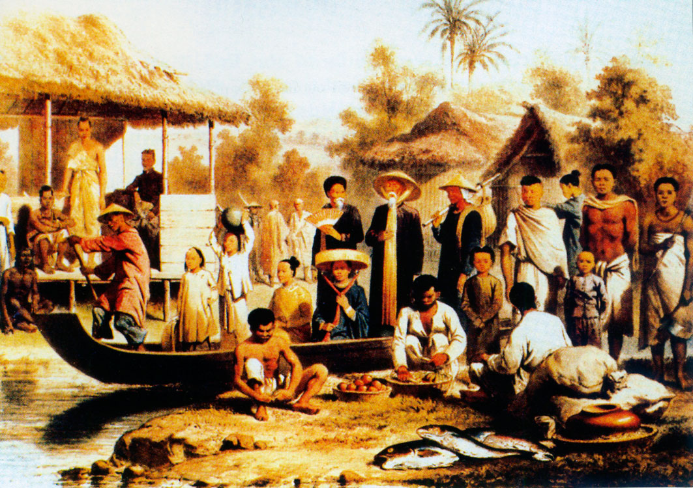
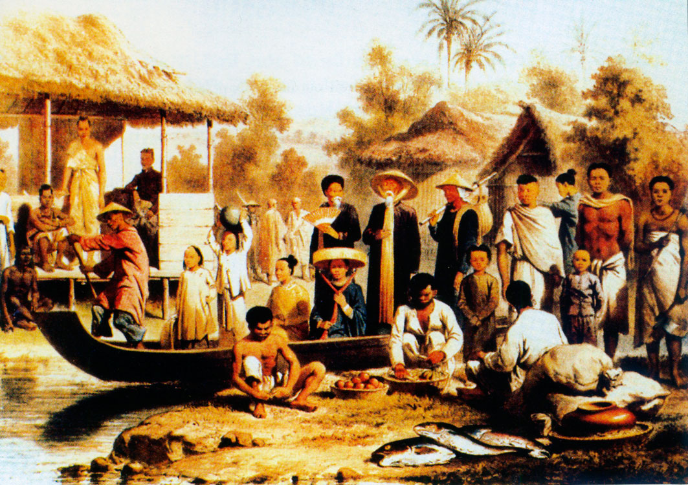

TRANG CHỦ DU LỊCH
Về Hưng Yên du lịch làng nghề hoa, cây cảnh
Đăng ngày 11 - 01 - 2022
Trong 2 năm qua, do đại dịch Covid-19, du lịch là một trong những ngành kinh tế chịu ảnh hưởng nặng nề nhất do các chính phủ đóng cửa biên giới, áp dụng lệnh hạn chế đi lại, phong tỏa nghiêm ngặt. Tuy nhiên, ở Việt Nam, Bộ Văn hóa, Thể thao và Du lịch đã có Quyết định số 2292/QĐ-BVHTTDL ngày 13.8.2021 về việc ban hành Chương trình hành động phát triển du lịch giai đoạn 2021-2025 đưa ra các giải pháp mang tính căn cơ nhằm khôi phục ngành du lịch sau khi dịch bệnh được đẩy lùi. Theo đó, giai đoạn (2021-2025) trong bối cảnh ảnh hưởng của đại dịch Covid-19, du lịch cần được đánh giá, nhìn nhận lại để có được sự khôi phục nhanh nhất và bứt phá phát triển sau đại dịch. Trong đó, sản phẩm du lịch là vấn đề cốt lõi để xem xét và thiết lập các hoạt động có liên quan. Trong số rất nhiều loại hình, sản phẩm du lịch mới được xây dựng trong thời gian gần đây, không thể không kể đến phát triển làng nghề hoa, cây cảnh gắn với du lịch.
Làng hoa Xuân Quan (Văn Giang). Ảnh Phạm Đức Nghĩ
Tỉnh Hưng Yên là quê hương của nhiều đặc sản nông sản rất hấp dẫn với khách du lịch như: Gà Đông Tảo, nhãn lồng v.v… Đặc biệt ở Hưng Yên thời gian qua đã xuất hiện một số làng hoa, cây cảnh nổi tiếng ở huyện Văn Giang như Xuân Quan, Phụng Công, Liên Nghĩa, Thắng Lợi, Mễ Sở và huyện Khoái Châu với làng quất cảnh Dũng Tiến (xã Đông Tảo), làng nghề quất cảnh Thiết Trụ (xã Bình Minh) với nhiều loại hoa, cây cảnh, cây công trình đã và đang được thị trường ưa chuộng trên khắp mọi miền Tổ quốc. Theo Quyết định số 1987/QĐ-UBND ngày 27.8.2020 của UBND tỉnh, định hướng đến năm 2025, diện tích trồng hoa của toàn tỉnh là 1.500 ha và diện tích cây cảnh là 1.000 ha.
Có thể nói, vấn đề phát triển các làng nghề hoa, cây cảnh gắn với du lịch nông nghiệp hiện nay đang là hướng đi đầy triển vọng không chỉ của Hưng Yên mà là của nhiều địa phương khác trong cả nước. Đây chính là điều kiện thuận lợi để du lịch Hưng Yên khai thác tạo ra lợi thế cạnh tranh với các địa phương trong vùng đồng bằng sông Hồng, tiến tới trong nước và mở rộng ra khu vực, quốc tế.
Bên cạnh đó, Hưng Yên là tỉnh tập trung nhiều di tích lịch sử nổi tiếng, trong đó có 172 di tích được xếp hạng quốc gia, cùng hàng ngàn tài liệu và hiện vật cổ có giá trị; vùng bãi sông Hồng, sông Luộc có các quần thể di tích lịch sử, văn hóa, tâm linh lâu đời, nổi tiếng như quần thể di tích Phố Hiến, khu du lịch Đa Hòa - Dạ Trạch, lễ hội Chử Đồng Tử - Tiên Dung, đền Mẫu, cây Đa và đền thờ La Tiến, đền Tống Trân - Cúc Hoa,… trong số hơn 1.802 di tích lịch sử văn hóa của toàn tỉnh, đây là nguồn tài nguyên văn hóa lớn, rất có giá trị cho phát triển du lịch vùng bãi, các điểm du lịch, di tích phát triển các dịch vụ thu hút du khách nhưng còn thiếu tính chuyên nghiệp, chưa hình thành được các tuyến du lịch ổn định. Ngoài ra còn có di sản phi vật thể với gần 400 lễ hội các loại, phong tục, tập quán, thơ ca, di sản Hán Nôm... Hệ thống di sản này là vật chứng quan trọng về thiên nhiên - lịch sử - con người của Hưng Yên trong quá khứ và hiện tại, là những nét đặc trưng, những giá trị văn hóa, tín ngưỡng của Hưng Yên nói riêng, vùng đồng bằng châu thổ sông Hồng nói chung.
Ngoài ra, Hưng Yên có hệ thống các làng nghề thủ công mỹ nghệ truyền thống gắn với truyền thống văn hóa lâu đời của cư dân thuộc vùng châu thổ sông Hồng như làng nghề chế biến lương thực, thực phẩm, làng nghề trồng hoa, cây cảnh, làng nghề mây tre đan, làng nghề chạm bạc, làng nghề sản xuất đồ gỗ mỹ nghệ… Đây là những điều kiện rất thuận lợi cho việc phát triển loại hình du lịch nhân văn kết hợp với du lịch lịch sử, du lịch nông nghiệp sinh thái, du lịch cảnh quan, du lịch làng nghề và các hoạt động văn hóa dân gian cùng với sản vật địa phương như gà Đông Tảo, nhãn lồng, hoa cây cảnh...
Trải qua quá trình hình thành và phát triển, các làng nghề trên địa bàn cả nước đã và đang giữ vai trò quan trọng trong khu vực nông thôn như: Tạo việc làm, tăng thu nhập, góp phần chuyển dịch và tái cơ cấu ngành nông nghiệp, xây dựng nông thôn mới, phát triển du lịch… Ngoài ra, các làng nghề còn được xem là di sản văn hóa và việc phát triển làng nghề là giữ gìn bản sắc văn hóa dân tộc trong quá trình hội nhập kinh tế quốc tế. Do đó, cùng với sự phát triển chung của làng nghề cả nước, các làng nghề trên địa bàn tỉnh Hưng Yên đang có sự chuyển mình mạnh mẽ, phù hợp xu thế hội nhập.
Nghề đan đó ở xã Thủ Sỹ (Tiên Lữ). Ảnh Lê Hào
Việc quy hoạch, xây dựng cảnh quan du lịch làng nghề để phát triển sản phẩm du lịch làng nghề hoa, cây cảnh gắn với các khu, điểm và tuyến du lịch của tỉnh đã được xác định tại Quyết định số 380/QĐ-UBND ngày 26.1.2018 của UBND tỉnh. Theo đó, phấn đấu năm 2025, làng nghề hoa, cây cảnh đón được khoảng hơn 0,2-0,4 triệu lượt khách du lịch (trong tổng số 1,3 triệu lượt khách du lịch trên địa bàn toàn tỉnh). Vì vậy, phát triển làng nghề hoa, cây cảnh gắn với du lịch nông nghiệp tỉnh phù hợp với quy hoạch tỉnh; phù hợp với Chương trình mục tiêu quốc gia xây dựng nông thôn mới giai đoạn 2021-2025; phù hợp với định hướng phát triển nông nghiệp, phát triển du lịch, đồng thời phát triển làng nghề hoa, cây cảnh phải gắn với quá trình bảo tồn và phát triển những nét văn hóa đặc trưng của địa phương; kiến tạo cảnh quan nông thôn giàu bản sắc, văn minh, hiện đại.
Bên cạnh đó, phát triển làng nghề hoa, cây cảnh gắn với du lịch nông nghiệp trên cơ sở khai thác đồng thời tiềm năng thế mạnh của nghề trồng hoa, cây cảnh và ngành du lịch nhằm đạt mục tiêu kép là nâng cao hiệu quả sản xuất, kinh doanh của cả 2 lĩnh vực nông nghiệp và du lịch trên địa bàn tỉnh. Theo số liệu thống kê, Hưng Yên là một trong những tỉnh có nghề sản xuất và kinh doanh sinh vật cảnh lớn nhất cả nước, tuy nhiên đến năm 2016, trên địa bàn tỉnh vẫn chưa xây dựng được làng nghề sản xuất và kinh doanh sinh vật cảnh. Đến nay, trên địa bàn tỉnh có 7 làng nghề hoa, cây cảnh được công nhận, tập trung ở huyện Văn Giang 5 làng nghề, huyện Khoái Châu 2 làng nghề.
Việc xây dựng thương hiệu các sản phẩm làng nghề hoa, cây cảnh đã được các địa phương, làng nghề triển khai thực hiện. Đến nay, có 3 làng nghề hoa, cây cảnh đã được công nhận nhãn hiệu tập thể, gồm: Làng nghề hoa, cây cảnh xã Xuân Quan, làng nghề hoa, cây cảnh Phụng Công; làng nghề quất cảnh xã Thắng Lợi (Văn Giang) và nhiều làng nghề khác đang xây dựng kế hoạch và đề xuất các cơ quan chức năng hướng dẫn, hỗ trợ xây dựng nhãn hiệu.
Sản xuất tại Làng nghề hoa, cây cảnh xã Mễ Sở (Văn Giang)
Công tác xúc tiến thương mại nhằm quảng bá, giới thiệu sản phẩm đã được một số địa phương, làng nghề quan tâm thực hiện qua phương tiện truyền thông, các mạng xã hội Facebook, Zalo...; tích cực tham gia các hội chợ, triển lãm nhằm tìm kiếm và mở rộng thị trường tiêu thụ như: Tổ chức Lễ hội hoa Xuân Quan năm 2017, 2020; lập các đại lý hoa, cây cảnh của các nhà vườn trên địa bàn Hà Nội; quảng bá du lịch Hưng Yên (trong đó có các làng hoa, cây cảnh) trên các tuyến phố đi bộ Hà Nội.
Song song với tiềm năng, lợi thế, Hưng Yên cũng gặp không ít trở ngại thách thức đối với phát triển du lịch của tỉnh, nhất là đối với các sản phẩm du lịch nông nghiệp như: Thứ nhất, vị trí địa lý Hưng Yên giáp Thủ đô Hà Nội vừa là lợi thế nhưng cũng là thách thức: Thị trường Hà Nội là thị trường khó tính, yêu cầu chất lượng cao. Các sản phẩm du lịch làng nghề hoa, cây cảnh của Hưng Yên sẽ phải cạnh tranh gay gắt với các sản phẩm cùng loại của Hà Nội và một số tỉnh trong khu vực. Thứ hai, các làng nghề hoa, cây cảnh hầu như chưa chú ý xây dựng cảnh quan làng nghề gắn với du lịch. Thứ ba, các chính sách để kết nối giữa phát triển sản phẩm của làng nghề với phát triển du lịch chưa đủ mạnh để khai thác ưu thế vốn có về du lịch của các làng nghề hoa, cây cảnh. Thứ tư, nhiều địa phương không còn quỹ đất phù hợp để phát triển hoa, cây cảnh tập trung do dành đất để xây dựng các khu đô thị mới, khu/cụm công nghiệp TTCN, phát triển kết cấu hạ tầng (chủ yếu là giao thông) theo quy hoạch đã được cấp thẩm quyền phê duyệt. Ở một số địa bàn, diện tích hoa, cây cảnh có thể chuyển đổi, mở rộng diện tích nhưng phân tán, không đủ tiêu chí thành làng nghề hoa, cây cảnh theo quy định.
Dự báo trong tương lai, du lịch nông nghiệp sẽ ngày càng trở nên phổ biến và trở thành lĩnh vực nhiều triển vọng, đa lợi ích. Bên cạnh góp phần phát triển kinh tế, tạo việc làm cho người lao động, du lịch nông nghiệp còn hạn chế khuynh hướng ly hương, thúc đẩy hội nhập và xuất khẩu sản phẩm.Trong định hướng Chiến lược phát triển du lịch Việt Nam, du lịch sinh thái gắn với nông nghiệp, nông thôn được xác định là 1 trong 5 dòng sản phẩm chủ đạo. Theo Quyết định số 933/QĐ-TTg ngày 14.6.2021 của Thủ tướng Chính phủ về việc phê duyệt nhiệm vụ lập Quy hoạch hệ thống du lịch thời kỳ 2021 - 2030, tầm nhìn đến năm 2045, phát triển du lịch bền vững theo hướng tăng trưởng xanh, bảo đảm hài hòa giữa phát triển du lịch với bảo tồn, phát huy các giá trị tài nguyên, đặc biệt là tài nguyên văn hóa để xây dựng sản phẩm du lịch mang đậm bản sắc dân tộc; giải quyết các vấn đề xã hội, bảo vệ môi trường, thích ứng với biến đổi khí hậu và bảo đảm quốc phòng, an ninh.
Sản xuất tại Làng nghề hoa, cây cảnh xã Mễ Sở (Văn Giang)
Đối với Hưng Yên, Quyết định số 380/QĐ-UBND ngày 26.1.2018 của UBND tỉnh nêu rõ: Phấn đấu đến năm 2025, du lịch Hưng Yên trở thành ngành kinh tế có vị trí quan trọng, tạo tiền đề thuận lợi phát triển thành ngành kinh tế mũi nhọn cho giai đoạn tiếp theo với hệ thống cơ sở vật chất kỹ thuật đồng bộ; sản phẩm du lịch có chất lượng, đa dạng, có thương hiệu, mang bản sắc văn hóa của Phố Hiến - Hưng Yên và của vùng đồng bằng châu thổ sông Hồng, thân thiện với môi trường, đưa Hưng Yên trở thành một điểm đến du lịch hấp dẫn, có khả năng cạnh tranh và trở thành một trong những địa phương đạt mức trung bình khá về du lịch. Hưng Yên có tiềm năng thế mạnh phát triển du lịch xanh, du lịch sinh thái nông nghiệp, đặc biệt du lịch làng nghề hoa, cây cảnh sẽ là sản phẩm du lịch hấp dẫn và sẽ phát triển mạnh trong tương lai. Ngày nay, khi thu nhập, mức sống của người dân các nơi trên thế giới nói chung và của Việt Nam nói riêng ngày một tăng, trình độ dân trí ngày một cao thì nhu cầu thưởng ngoạn, trải nghiệm, tìm hiểu lịch sử, văn hoá, đời sống nhân dân các dân tộc, các địa phương ngày càng tăng. Đó là một trong những động lực thúc đẩy nhu cầu du lịch nhiều hơn. Để thoả mãn phần nào những nhu cầu ấy, một sản phẩm du lịch mới đã ra đời và phát triển ở Việt Nam - các chương trình du lịch làng nghề nói chung, du lịch làng nghề hoa, cây cảnh nói riêng.
Du lịch thưởng ngoạn tại các làng nghề hoa, cây cảnh đã khẳng định vị trí quan trọng trong các sản phẩm du lịch ở từng địa phương. Những làng nghề này như một hình ảnh đầy bản sắc, khẳng định nét riêng biệt, độc đáo không thể thay thế; là cách giới thiệu sinh động về truyền thống, văn hóa, sản phẩm, sản vật và con người của mỗi vùng, miền, địa phương. Phát triển du lịch làng nghề hoa, cây cảnh chính là một hướng đi đúng đắn và phù hợp, được nhiều địa phương ưu tiên trong chính sách quảng bá và phát triển du lịch. Những lợi ích to lớn của việc phát triển du lịch làng nghề không chỉ thể hiện ở những con số tăng trưởng lợi nhuận kinh tế, ở việc tạo thêm việc làm cho lao động địa phương và hơn thế nữa, còn là một cách thức gìn giữ, bảo tồn những giá trị văn hoá của dân tộc. Đó là những lợi ích lâu dài khó lượng hóa được về kinh tế. Bên cạnh đó, du lịch hoa, cây cảnh là loại hình du lịch mang tính triết lý, nhân văn sâu sắc. Du lịch hoa không chỉ nhắm tới giá trị đặc sắc tự nhiên của các loài hoa, cây cảnh mà còn được hiểu theo nghĩa rộng là các công viên hoa chuyên đề, các làng hoa, cây cảnh truyền thống đặc trưng của mỗi địa phương trên địa bàn Hưng Yên./.
Phạm Văn Hiệu
Phó Giám đốc Sở Văn hoá, Thể thao và Du
lịch
Theo: http://baohungyen.vn
Tags
Tin Mới Nhất
Tìm giải pháp thu hút khách du lịch cho Hưng Yên (20/01/2024 9:32 SA)
Hưng Yên: Sự hồi sinh và nỗ lực xúc tiến du lịch (20/01/2024 9:32 SA)
Du lịch trải nghiệm nông thôn - làng nghề (13/01/2024 1:50 CH)
Hiệu quả từ hoạt động xúc tiến quảng bá du lịch (25/12/2023 7:05 SA)
Hội nghị phát triển du lịch Việt Nam nhanh, bền vững (16/11/2023 1:21 CH)
Hưng Yên tham gia liên kết, hợp tác phát triển du lịch tại tỉnh Bắc Giang (12/11/2023 4:00 CH)
Để du lịch Hưng Yên cất cánh (10/11/2023 2:09 CH)
Hội thảo khoa học “Thực trạng phát triển các sản phẩm du lịch Hưng Yên” (31/10/2023 2:55 CH)


 
